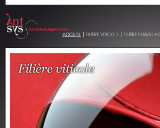

Alban Cornuau
06/01/1994
67 rue de Maurian
Rce le Maurian 4204D
33290 Blanquefort
06 95 18 15 55
alban.cornuau@viacesi.fr
COMPÉTENCES INFORMATIQUES
- Stage programmation C# liée à une base de données SQL Server ↓
- Projet programmation C et JAVA
- Projet Base de données (sous Microsoft Access, SQL)
- Projet Web (HTML, CSS, JS/jQuery, PHP, SQL, sous WAMP)
ÉTUDES ET FORMATIONS
| 2013-2015 | 1ière/2ième Année École supérieure d’informatique EXIA CESI |
| 2013 | Baccalauréat S Sciences de l’Ingénieur option Sport |
| 2009 | Brevet des collèges |
EXPÉRIENCES PROFESSIONNELLES
| 2014 | 9 semaines | Stage à ANTSYS, création interface de vente basé sur une base de données. La mission consistais à d&ecute;velopper l'interface en C# pour les utilisateurs |
| 2012/13/14 | Juillet/Aout | Guide/batelier saisonnier Marais Poitevin Embarcadère Prada |
| Mars 2011 | une semaine | Stage à HEULIEZ, rencontre des ingénieurs et de l'administration, découverte de l'organisation général et mise en production |
INFORMATIONS COMPLÉMENTAIRES
- PSC1 (prévention et secours civiques de niveau 1)
- Permis de conduire B
- Judo (ceinture marron)
- Scouts de France